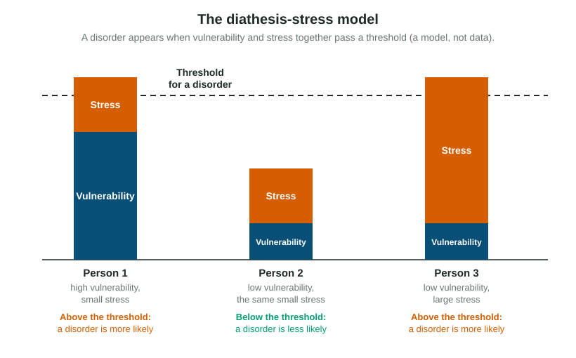

Explaining and Classifying Psychological Disorders
A psychological disorder is a pattern of thinking, feeling or behaving that is unusual for its cultural setting and causes distress or dysfunction.
Part 1 · Hook
Why this matters
Part 2 · Before you start
What this builds on
Part 3 · Prerequisite check
Quick check before you start
1. A researcher explains a student's test anxiety by pointing to her racing heart and stress hormones. Which perspective is that?
- Biological
- Humanistic
- Sociocultural
- Psychodynamic
Show the answer
Heart rate and hormones are body processes, so the biological perspective fits.
- Correct: Biological:
- Humanistic:
- Sociocultural:
- Psychodynamic:
2. During a semester, a student faces a breakup, a sick parent and a job loss. In health psychology, what are these events?
- Stressors
- Defense mechanisms
- Reinforcers
- Heuristics
Show the answer
Events that we see as threatening or challenging are stressors.
- Correct: Stressors:
- Defense mechanisms:
- Reinforcers:
- Heuristics:
Part 4 · See it
See it first

Part 5 · Step by step
How it works, step by step
- A person's thoughts, feelings or behavior become unusual for their culturedeviation is present, but that alone is not a disorder
- The pattern also causes real suffering or gets in the way of school, work or relationshipsdistress or dysfunction is present, and a clinician considers a diagnosis
- The clinician compares the symptoms with the criteria in the DSM-5-TR or the ICDthe pattern is classified as a specific disorder, or not
- A vulnerability, such as family history, meets a large enough stressthe disorder appears, as the diathesis-stress model predicts
Part 6 · Key ideas
Key ideas
- A psychological disorder involves deviation (unusual for the person's culture), plus distress (suffering) or dysfunction (it gets in the way of life). Unusual alone is not a disorder.
- The DSM-5-TR (American Psychiatric Association) and the ICD (World Health Organization) classify disorders by their symptoms and how long they last.
- Each perspective offers an explanation: biological, behavioral, cognitive, psychodynamic, humanistic, evolutionary and sociocultural. Match the explanation to the perspective.
- The biopsychosocial model combines body, mind and social world; the diathesis-stress model says vulnerability plus stress; the eclectic approach draws on several perspectives.
Part 7 · Misconception
A common mistake
The wrong idea: Anyone whose behavior is unusual has a psychological disorder.
What actually happens: Being unusual (deviation) is not enough. A disorder also causes significant distress or gets in the way of daily life, and what counts as unusual depends on the person's culture.
Part 8 · Check yourself
Check yourself
Exam-style questions. Anything you miss goes into your review queue.
1. Dana has felt low most of the day for five weeks. She has stopped going to her classes and lost her part-time job because she cannot get out of bed on time. Which part of the definition of a psychological disorder do the missed classes and the lost job show most directly?
- Deviation: the pattern is unusual for her culture
- Distress: the pattern causes her inner suffering
- Diathesis: the pattern comes from a vulnerability
- Dysfunction: it interferes with daily life
Show the answer
Dysfunction means the pattern interferes with work, school, relationships or self-care; her missed classes and lost job are exactly that.
- Deviation: the pattern is unusual for her culture: Deviation is about how unusual a pattern is in its culture. Missed classes and a lost job show interference with life, not unusualness.
- Distress: the pattern causes her inner suffering: Distress is the inner pain she feels. The missed classes and lost job are about what she can no longer do.
- Diathesis: the pattern comes from a vulnerability: A diathesis is a vulnerability in the diathesis-stress model, a possible cause, not part of the definition.
- Correct: Dysfunction: it interferes with daily life: Right: missing classes and losing a job are signs that the pattern interferes with daily functioning.
2. Theo lives alone in a cabin without electricity, dyes his hair bright green and plays the accordion at midnight. He is content, keeps steady work as a carpenter and has close friends. Why would a clinician most likely not diagnose a psychological disorder?
- His behavior is too common to count as deviation
- He lives alone, so no one can observe his symptoms
- His unusual behavior causes no distress or dysfunction
- He has no diathesis, so a disorder is impossible for him
Show the answer
A pattern counts as a disorder when it is unusual and also causes distress or gets in the way of life. Being different is not a disorder.
- His behavior is too common to count as deviation: His habits are unusual, so deviation is present. What is missing is distress and dysfunction.
- He lives alone, so no one can observe his symptoms: Living alone does not prevent a diagnosis. What matters is whether the pattern causes distress or dysfunction.
- Correct: His unusual behavior causes no distress or dysfunction: Right: deviation alone is not enough. A disorder also involves distress or dysfunction, and Theo shows neither.
- He has no diathesis, so a disorder is impossible for him: Diathesis is a possible cause, not part of the definition, and nothing in the scenario tells us about it.
3. In one community, people in mourning are expected to speak aloud to a relative who has died, at a family altar, for several weeks. A visiting clinician from another country first thinks this behavior is a sign of a disorder. Which idea best explains the clinician's error?
- Distress is the single criterion that decides a diagnosis
- Deviation depends on the person's own cultural norms
- The diathesis-stress model says that grief causes disorders
- The behavior is a symptom, so the culture does not matter
Show the answer
The sociocultural perspective reminds clinicians that what counts as unusual depends on the culture. A behavior expected in mourning is not deviant in that setting.
- Distress is the single criterion that decides a diagnosis: Distress is one part of the definition, but the error here is about cultural norms, not distress.
- Correct: Deviation depends on the person's own cultural norms: Right: speaking to the dead is expected in that community, so it is not deviant there. Judging it by the clinician's home norms is the mistake.
- The diathesis-stress model says that grief causes disorders: Grief is a normal response to loss, and the model does not say grief alone causes a disorder.
- The behavior is a symptom, so the culture does not matter: The opposite is true: whether a behavior is unusual depends on its cultural context.
4. A clinician assessing Rosa notes three things: her mother and grandmother both had long periods of depression; Rosa tends to blame herself for anything that goes wrong; and she recently lost her job in a town with few others. Which approach is the clinician using?
- The cognitive perspective alone
- The International Classification of Diseases
- The biopsychosocial model
- The evolutionary perspective
Show the answer
The biopsychosocial model explains a disorder as the product of biological, psychological and social factors acting together.
- The cognitive perspective alone: Self-blame is cognitive, but the clinician also weighs family history and social conditions.
- The International Classification of Diseases: The ICD is a classification system. It does not combine causes into an explanation.
- Correct: The biopsychosocial model: Right: family history (biological), self-blame (psychological) and job loss in a hard economy (social) are combined.
- The evolutionary perspective: Nothing here is about survival value. The clinician combines biological, psychological and social factors.
5. Identical twins Ana and Bea share the same genes. Both have a family history that raises their risk of depression. Ana loses her home in a flood and goes through a long period of depression; Bea, living elsewhere, faces no major losses and does not. Which model best explains the difference?
- The diathesis-stress model
- The eclectic approach
- The evolutionary perspective
- The psychodynamic perspective
Show the answer
In the diathesis-stress model a vulnerability alone is not enough: a disorder appears when vulnerability meets enough stress.
- Correct: The diathesis-stress model: Right: both share the vulnerability (diathesis), but only Ana met a major stressor, so only she developed depression.
- The eclectic approach: The eclectic approach is about drawing on several perspectives in treatment, not about why one twin became ill.
- The evolutionary perspective: The evolutionary perspective explains why traits are common, not why one twin and not the other developed depression.
- The psychodynamic perspective: Nothing in the scenario points to unconscious conflicts. The difference is the stressful event.
Figure
The diathesis-stress model
6. In the figure, why does Person 2 stay below the threshold while Person 1 passes it, even though both face the same small stress?
- Person 2 faces a larger stress than Person 1 does
- Person 1 has no vulnerability, just stress
- Person 1 starts with a much larger vulnerability
- Person 2 is above the threshold as well
Show the answer
With equal stress, the person with the greater diathesis is the one whose total passes the threshold.
- Person 2 faces a larger stress than Person 1 does: The stress bars for Person 1 and Person 2 are the same height. The difference is vulnerability.
- Person 1 has no vulnerability, just stress: Person 1's vulnerability bar is the tallest in the figure.
- Correct: Person 1 starts with a much larger vulnerability: Right: the stress is the same size, so the larger vulnerability carries Person 1 over the threshold.
- Person 2 is above the threshold as well: Person 2's bar ends well below the dashed threshold line.
7. According to the model in the figure, what would most likely happen if Person 2 later faced a stress as large as Person 3's?
- Person 2 would stay below the threshold
- Person 2 would also pass the threshold
- Person 2's vulnerability would become zero
- The threshold for Person 2 would rise
Show the answer
In the model, total load is vulnerability plus stress. Person 2 and Person 3 have the same vulnerability, so equal stress gives the same result.
- Person 2 would stay below the threshold: Person 3 has the same vulnerability and passes the threshold with that stress, so Person 2 would as well.
- Correct: Person 2 would also pass the threshold: Right: Person 2 has the same small vulnerability as Person 3, so the same large stress would carry Person 2 over the threshold too.
- Person 2's vulnerability would become zero: Stress does not remove a vulnerability. The two add together in the model.
- The threshold for Person 2 would rise: The threshold is the same line for everyone in the model.
8. Which real situation fits the pattern shown for Person 3?
- Someone with no family history becomes depressed after several severe losses
- A person with a strong family history develops depression after a minor argument
- A person with a strong family history stays well through a calm, easy year
- A person with no family history stays well after a minor argument with a friend
Show the answer
Person 3 has a small vulnerability and a very large stress, and the stress alone carries the total over the threshold.
- Correct: Someone with no family history becomes depressed after several severe losses: Right: low vulnerability but a very large stress, like Person 3.
- A person with a strong family history develops depression after a minor argument: That is high vulnerability with small stress, the pattern of Person 1.
- A person with a strong family history stays well through a calm, easy year: That is high vulnerability with little stress, which matches none of the bars.
- A person with no family history stays well after a minor argument with a friend: That is low vulnerability with small stress, the pattern of Person 2.
Part 9 · Summary
Summary
If you are struggling, you are not alone. In the US, call or text 988 (the Suicide and Crisis Lifeline), or talk to a trusted adult.
Part 10 · Up next
What comes next
Part 11 · Connections